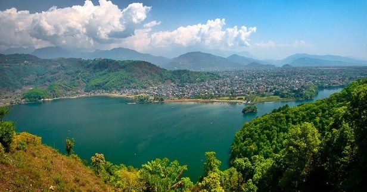
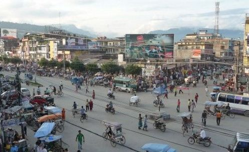
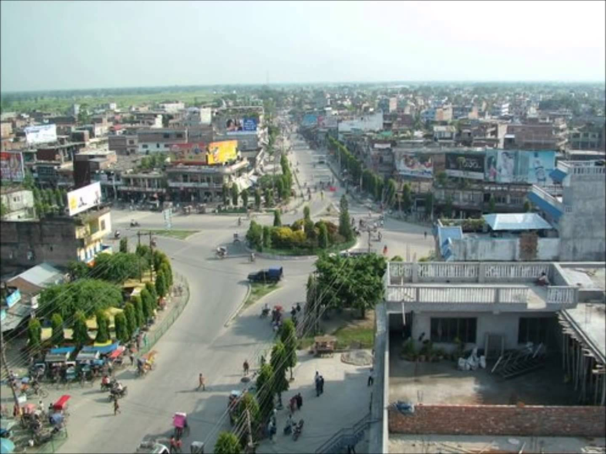
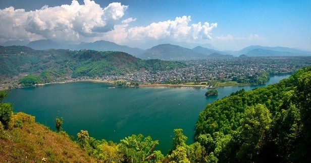
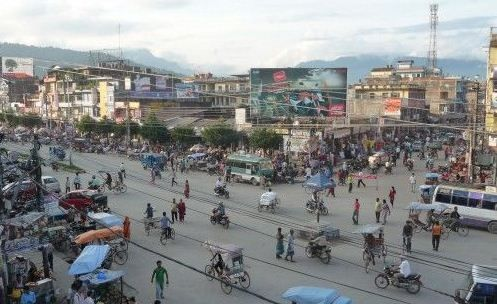
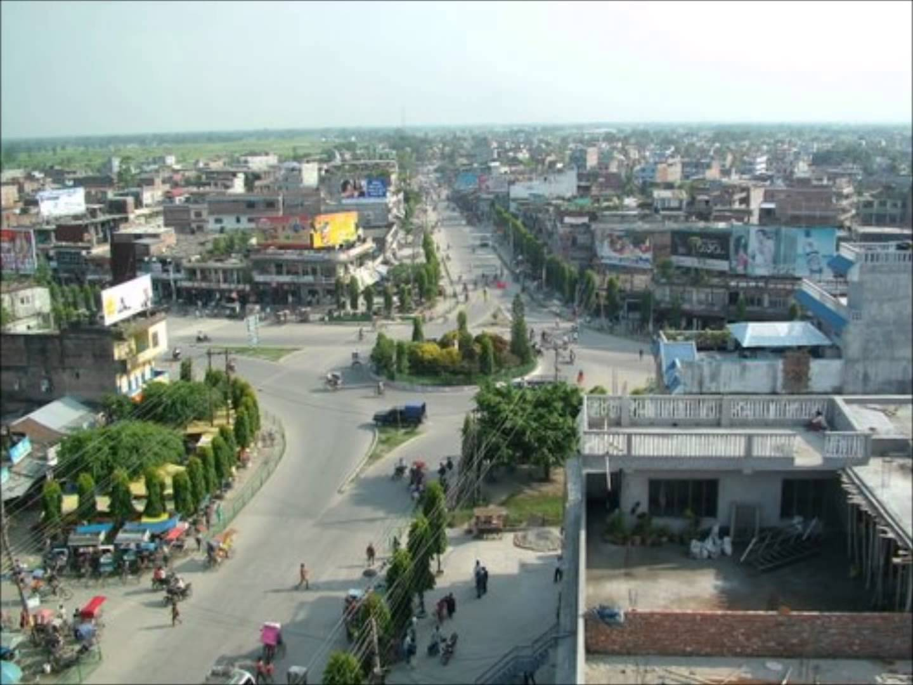
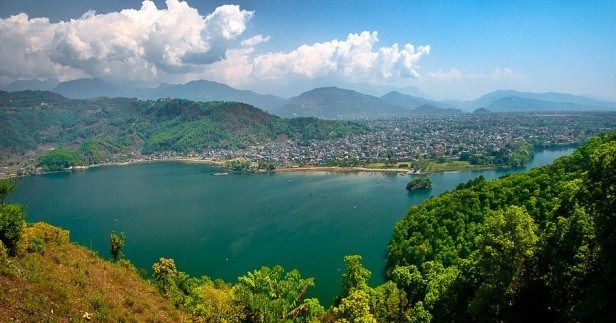
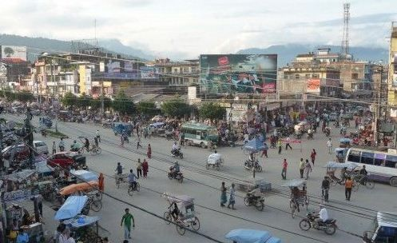
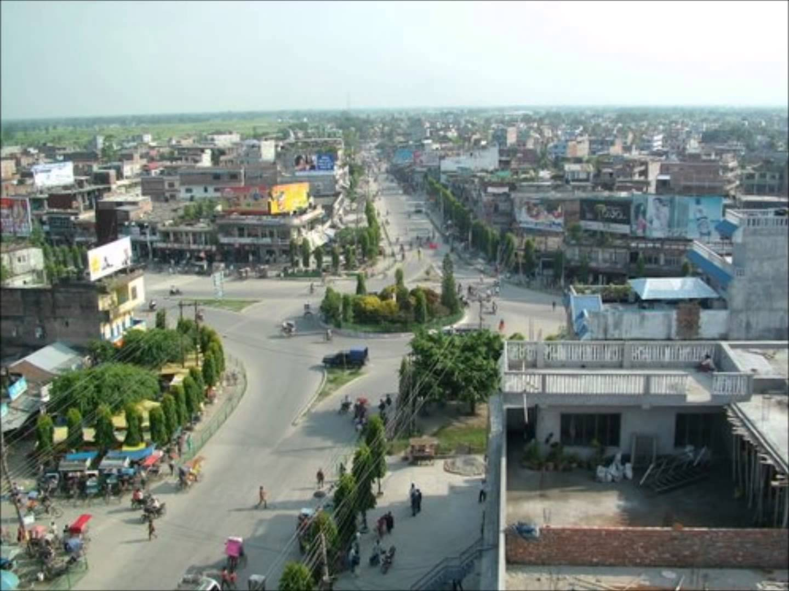

ABOUT US
WAWA is the one of the most succesful ecommerce site in nepal.within very short period of time it has been succesful to achieve
great heights. it's main focus is to bring the convinience and quality in shopping. it is gaining popularity because of it's
quality products and quick service.
we play big role in daily life. Internet it is used not only as means of obtaining information and sending e-mail messages, it became a significant tool in doing business, in e-commerce particularly. At web sites of most companies selling any products, it is possible not only find information about the company and its products, but also buy any product of this company. Or it is also possible to buy products from web-stores like ours. One doesn't have to go shopping and try to find what you need, it is possible to buy anything from us and only thing needed is the Internet.
Because of such a rapid development of Internet and, especially, of e-commerce, the number of products increases every day.
wawa was initially opened by shiva khatri and his friends Prabin Bohara,Rikesh khatri and Ujwol Adhikari in his house in bhaktapur,Nepal.But now it is spread over many cities of nepal. it has gained a lot of popularity in very short period of time. it has opened its branches in following cities and it is soon opening its branches in every nook and corner of the country and perhaps it may go global.
Kathmandu,Pokhara, Butwal, Bharatpur,Dharan, Janakpur, Hetauda ,Birgunj, Tansen are the major cities where wawa is operating now



CONTACT US:
Kathmandu :9823371903
Pokhara:981473983
Butwal:984598988
Bharatpur:9843898934
Dharan:9874340800
Janakpur:9841394561
Hetauda: 9818904580
Birgunj:9851167528
Tansen:9841559799